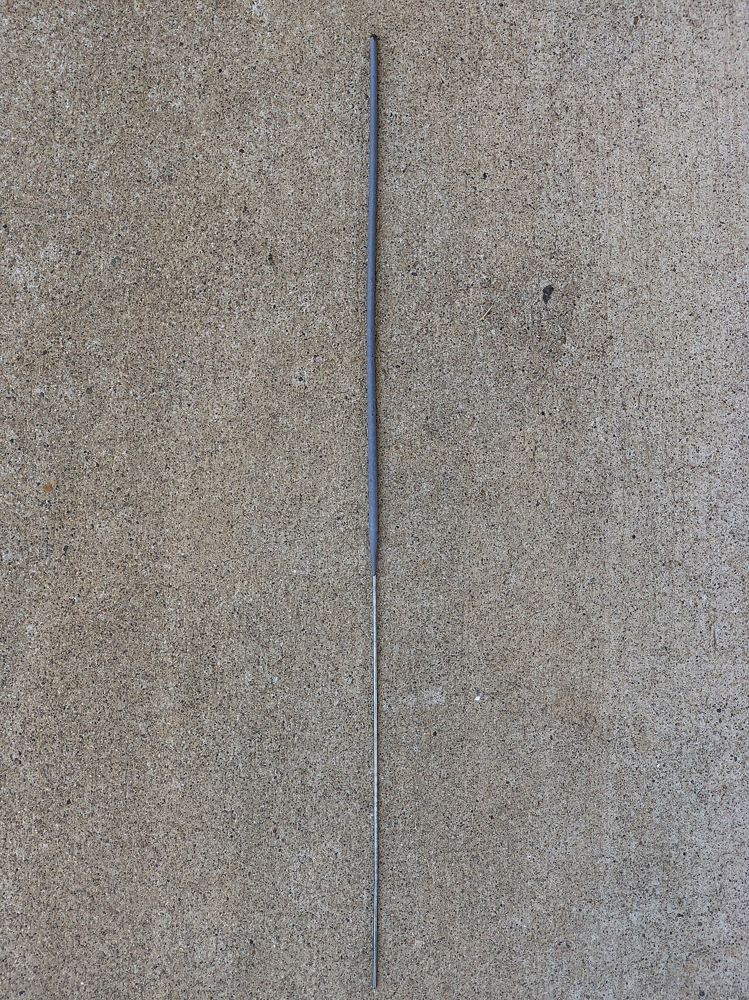

The Old Shelf / India / Unlit sparkler
Unlit sparkler
India
Unlit sparkler
the photo is 2022
Diwali crackers only if unlit, and not a how-to. This sparkler is unlit. It is not an Indian Diwali stack.
Stills only.

An unlit sparkler at Belmont Bay, Woodbridge, Virginia. Not lit, not a stack, and not identified as an Indian cracker. Shown only so the unlit-sparkler idea has a picture.
Famartin. CC BY-SA 4.0. Source page